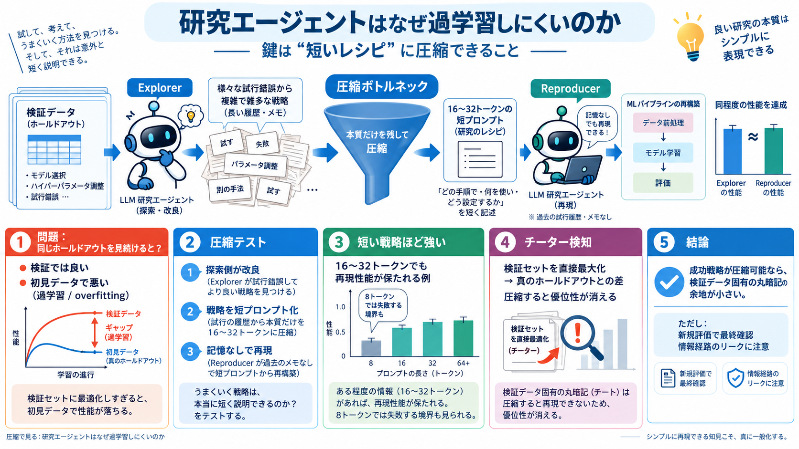

Why machine learning research agents don't overfit — and what compression has to do with it - Amazon Science
A few caveats are in order. The whole framework assumes that the only path from the validation data to the final model r…

過学習の謎を圧縮で
研究エージェントがベンチマークで改良を重ねても、なぜ過学習（overfitting）が起きにくいのかを「圧縮可能性」で説明する。
理屈では起きるはず
同じ検証データ（ホールドアウト）を繰り返し見ながら改良すると、いつかそのデータに合わせてしまい、新規データで性能が落ちるはずだ。
丸暗記じゃない
成功戦略が「短いレシピ」に圧縮できるなら、検証データ固有の細部を丸暗記していない可能性が高い。
圧縮できる＝情報ボトルネックを通過できる、という見立て。
圧縮テストで判定
LLM研究エージェントで、研究者コミュニティと同型の「改良ループ」を再現し、得られた戦略を少数トークンのプロンプトへ圧縮して再現可能性を測る。
検査の論理
「過学習仮説」を狙い撃ちできるのは、圧縮で検証データ固有の手がかりがボトルネックを通れるかを確認するからだ。
短い戦略ほど強い
成功した戦略が16〜32トークン程度まで圧縮しても再現性能が保たれる例がある。
境界が見える
トークン数を8に削ると再現できなくなる境界例が提示される。成功が「完全に一般知識」なだけではないことを示す。
チーター検知
エージェントに検証セットへ直接アクセスし、最大化させた場合は真のホールドアウトとの差が大きくなる。その後、短プロンプトへ圧縮すると優位性が消える。
圧縮デコーダ
圧縮デコーダとしてのLLMが重要だ。短い指示から、MLパイプライン（学習・推論の手順）を一般知識で復元できる。
前提が肝
圧縮テストが効く前提は「検証→戦略」へ至る情報経路がプロンプト経由だけであること。事前学習や公開情報のリークが別経路になると、検知できない可能性がある。
結論はこれ
成功戦略が圧縮可能で、検証データ固有の記憶を再現する余地が小さいから。圧縮境界を観測し、過学習を“検知”できる枠組みを提示している。
使いどころ
ベンチマーク偏重の開発・研究では、「短い要約（レシピ）で再現できるか」を診断軸にすると、過学習リスクを早期にあぶり出せる。
A few caveats are in order. The whole framework assumes that the only path from the validation data to the final model r…
Vitányi and Li, 2000). Bayesian approaches to human cognition offer accounts of how a broad array of human behaviour can…
A major challenge in machine learning (ML) is teaching models to make accurate predictions on data they've never seen be…
[42:29] but on the other hand, you know, if I only care about the outcome, uh then I probably didn't memorize uh [42:35]…
new insights into how ANNs might be analyzed to better understand the kinds of solutions they produce for particular pro…